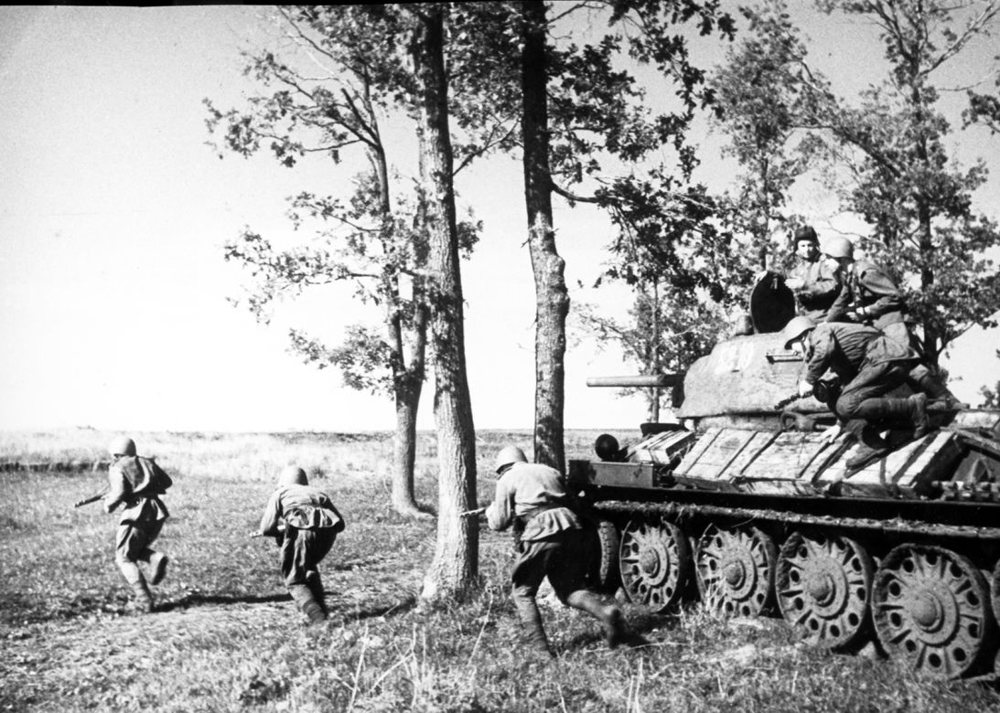
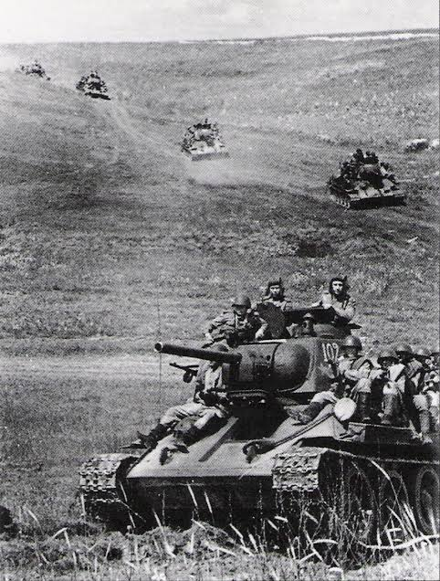
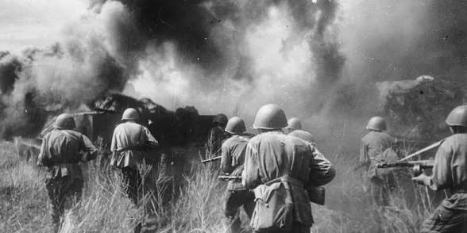

The Battle of Kursk: Armored Clash and the Eastern Front Salient
Fought in July and August 1943 around a prominent bulge in western Russia, the Battle of Kursk was the largest armored engagement of World War II and a decisive test of strength on the Eastern Front following the German defeat at Stalingrad.
The Kursk Salient and Defensive Preparations

Following the winter fighting of early 1943 and the stabilization of front lines in spring, a large Soviet-held bulge jutted westward around Kursk, creating an inviting target for German planners seeking to regain operational initiative.
German leadership devised Operation Citadel as a double pincer attack aimed at pinching off the salient from north and south, capturing Soviet forces inside the pocket, and shortening the front line.
Aware of German intentions through intelligence gathering, reconnaissance, and operational assessments, Soviet command chose not to launch a premature offensive and instead built deep defensive belts across the salient.
Over several months, hundreds of thousands of civilians and troops dug miles of trenches, anti-tank ditches, gun emplacements, and extensive minefields designed to channel, slow, and wear down advancing German armor.
Operation Citadel and Armored Combat

On July 5, 1943, German forces struck from the north toward Orel and from the south toward Belgorod and Kursk, supported by heavy artillery, aircraft, and armored formations including newer tank models.
In the northern sector, dense minefields, anti-tank obstacles, and coordinated Soviet artillery and infantry defenses quickly slowed the German advance and forced heavy attrition on attacking units.
In the southern sector, German armor pushed deeper into defensive zones before running into fierce resistance, counterattacks, and complex terrain around ridges, rail lines, and river valleys.
Around Prokhorovka on July 12, large numbers of Soviet and German armored vehicles clashed in close-quarters combat that underscored both the scale of the battle and the mounting strain on German assault formations.
Soviet Counteroffensives and Strategic Aftermath

By mid-July, slowed progress, high losses, and urgent demands elsewhere—including Allied landings in Sicily—led German leadership to halt Operation Citadel and shift units to other sectors.
Soviet forces seized the initiative almost immediately, launching major counteroffensives—Operation Kutuzov toward Orel and Operation Rumyantsev toward Belgorod and Kharkov—that turned defense into sustained advance.
The outcome at Kursk demonstrated that the Red Army could absorb a major German armored offensive, halt it in depth, and transition rapidly into large-scale counter-offensives.
From August 1943 onward, Germany never regained strategic initiative on the Eastern Front, while Soviet armies pushed steadily westward across eastern Europe.
By spring 1943, the Eastern Front had stabilized along a jagged line after months of exhausting winter fighting. The large Soviet salient bulging westward around Kursk offered an appealing target for German planners hoping to strike both flanks and cut off a sizable concentration of Soviet forces.
German commanders planned Operation Citadel as a coordinated pincer assault from the north and south to meet near Kursk. Achieving a breakthrough required concentrating armor, self-propelled guns, aircraft, and experienced infantry while hoping that delays did not give Soviet defenders too much time to prepare.
Soviet intelligence and reconnaissance gathered clear indicators of German intentions well ahead of the attack. Rather than rushing into a costly summer offensive of their own, Soviet leaders decided to let German forces expend their strength against layered defenses before counterattacking.
Defending the Kursk salient involved months of engineering effort across successive belts of fortifications. Minefields, anti-tank strongpoints, trenches, barbed wire, and hidden gun positions were arranged in depth so that breaching one line merely brought attackers against the next.
Anti-tank artillery played a vital role in blunting armored thrusts. Guns positioned in mutually supporting locations fired at close range against advancing tanks, forcing armored formations to slow down, maneuver through narrow lanes, or absorb heavy losses.
Air power over the salient was fiercely contested throughout July 1943. Both sides committed large numbers of aircraft for ground support, reconnaissance, and air superiority, with shifting weather and intense anti-aircraft fire shaping daily air operations.
In the northern sector around Ponyri and Olkhovatka, German forces encountered steep ridges, entrenched defenders, and dense minefields. Progress remained slow and costly, limiting the ability of the northern pincer to break cleanly into open country.
In the southern sector near Oboyan and Prokhorovka, fighting grew even more intense as German units pressed through deep defenses. Around July 12, large armored forces converged near Prokhorovka in a massive, chaotic clash marked by dust, smoke, and close-range tank and anti-tank fire.
Even where German formations pushed forward, supply strain, mechanical wear, and mounting casualties gradually eroded offensive momentum. Replacement crews and spare parts could not easily keep pace with losses across extended front lines.
Strategic pressures outside the Kursk sector also weighed on German leadership. Allied landings in Sicily in July 1943 created urgent demands for forces and attention elsewhere, reinforcing reasons to call off Operation Citadel.
Once German offensive momentum stalled in mid-July, Soviet forces launched major counteroffensives near Orel, Belgorod, and Kharkov. These operations drove German units back across hard-won ground and showed that the Red Army could sustain large-scale offensive tempo through summer and autumn.
The Battle of Kursk marked a decisive turning point in armored warfare and Eastern Front strategy. Germany lost irreplaceable armor and experienced troops while permanently surrendering strategic initiative to the Soviet Union.
Engineer battalions, artillery crews, and infantry units worked closely to coordinate minefields, trenches, and interlocking anti-tank positions across the salient, forcing attacking formations to slow down under observed fire.
By the time Operation Citadel was called off in mid-July 1943, German armored and infantry formations had suffered heavy attrition, allowing Soviet forces to transition smoothly into large-scale summer and autumn offensives across the Eastern Front.
Supply lines stretching across rail junctions and rural roads faced heavy pressure as armored units maneuvered and sustained combat losses across both sides of the salient.
Once German offensive momentum stalled in mid-July, Soviet counteroffensives gained ground steadily across eastern Europe.
Artillery barrages, mine clearance teams, and mobile reserves shaped daily engagements across the salient, while the outcome at Kursk cemented Soviet operational momentum across eastern Europe.
Deep defensive belts across the salient forced attacking formations to fight through overlapping minefields, anti-tank strongpoints, and entrenched infantry before reaching open maneuver space.
By the time Operation Citadel ended in mid-July 1943, mounting losses and competing demands across Europe left German forces on the defensive while Soviet counteroffensives pressed steadily westward.
Mobile reserves and artillery fire helped contain German breakthroughs in key sectors, while sustained pressure along the flanks set the stage for broad Soviet counteroffensives.
By late summer 1943, the strategic balance in the east had shifted decisively.
Layered minefields and anti-tank guns slowed armored thrusts across difficult terrain, forcing attackers into costly engagements before reaching key objectives.
Soviet counteroffensives then pushed German forces back steadily across eastern Europe.
Coordinated artillery support, reserve armor, and stubborn defense along key ridges blunted German thrusts before Soviet forces pressed forward across the salient.
Steadfast defense in depth wore down attacking formations before large-scale Soviet advances resumed.